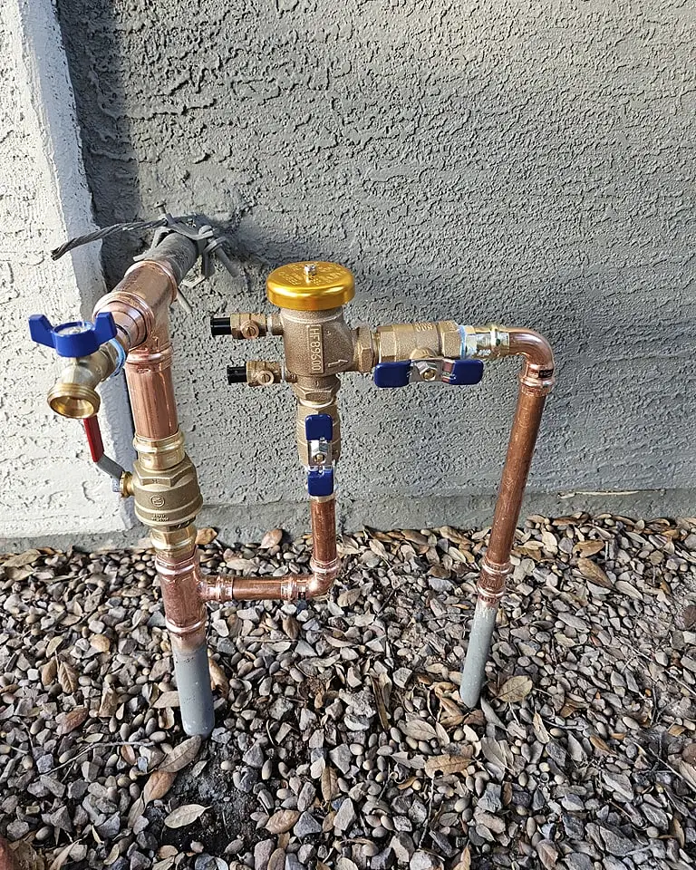
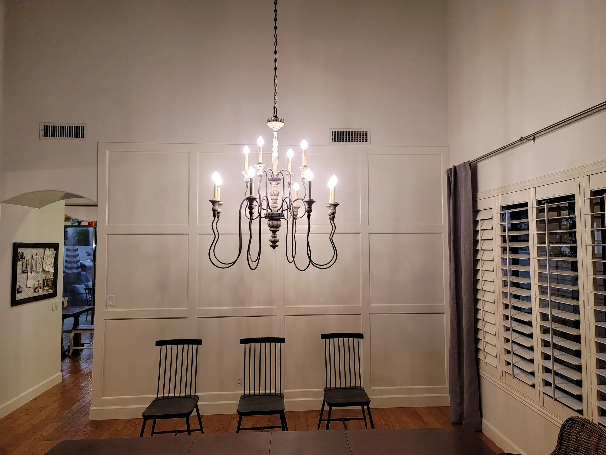
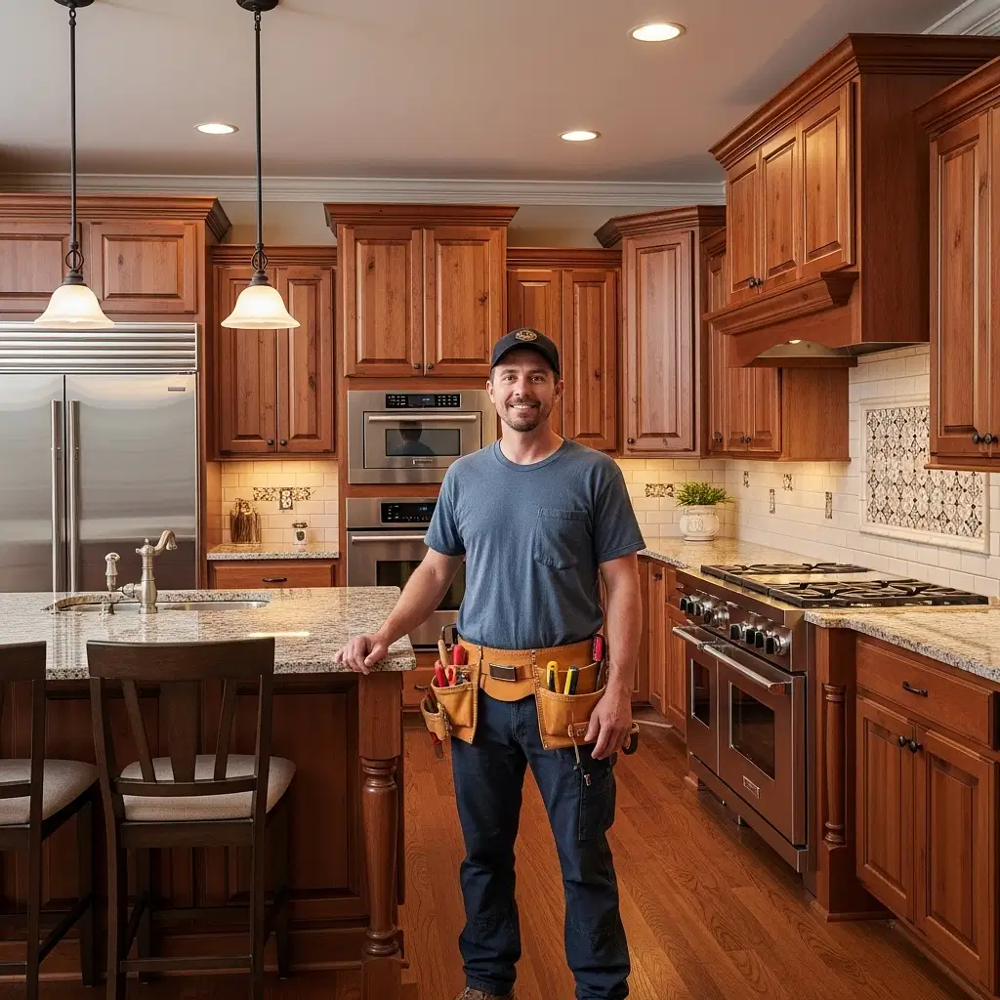

Trusted Handyman Services in Gilbert, AZ
Drywall, painting, carpentry, fixture repairs, ceiling fans, and everyday home fixes — with clear estimates, careful work, and insured service. Serving Gilbert and the East Valley since 2013.
Why homeowners call us
Practical East Valley repairs without the runaround. We tell you what’s in scope, what’s not, and what it will cost before work starts.
Clear communication
Honest estimates, scheduling that sticks, and updates until the job is done. No surprise charges.
Quality that lasts
Careful prep, solid materials, and clean finish work — whether it’s a patched wall or a new ceiling fan.
Insured & straightforward
Fully insured for the handyman services we offer. We stay within scope and refer licensed specialists when a job needs them.
On the job in the East Valley
Real work from Gilbert Handymen Services — repairs, finishes, and projects around the home.



Our services
One service list — no duplicates. Pick a category for details, or call if you’re not sure where your project fits.
Handyman
General home repairs, mounting, doors, hardware, and punch-list fixes around the house.
Handyman details →Carpentry
Trim, doors, shelving, decking repairs, and custom woodwork for everyday home needs.
Carpentry details →Electrical (handyman scope)
Ceiling fans, light fixtures, switches, and outlets on existing circuits — not panel or new-wiring work.
Electrical details →Painting
Interior refreshes, accent walls, and touch-ups that hold up in the Arizona climate.
Painting details →Drywall
Hole patches, texture blend, water-damage repairs, and small installation jobs.
Drywall details →Plumbing (handyman scope)
Faucets, toilets, supply-line fixes, and simple clogs — not water heater system installs.
Plumbing details →Bee Removal & Repair
Live bee removal and relocation by a beekeeper, plus drywall and structural repairs after the hive is out.
Bee removal details →Hive in the wall?
We handle bee removal as a two-step job — get the colony out safely, then restore the wall or eaves so the opening is sealed and finished.
- 1. Live removalA beekeeper relocates the colony when it’s practical and safe for your household.
- 2. Repair & sealDrywall, access points, and finishes get put back so the nest area isn’t left open.
How it works
Three simple steps from first call to finished repair.
Request a quote
Call or send a message with the job details. We’ll reply with a clear estimate and scope.
We schedule
Pick a weekday window that works. We confirm the appointment and show up when we say we will.
We show up and finish
Careful work, cleanup, and a quick walkthrough so the job is done right the first time.
Serving Gilbert & the East Valley
Primary service area: Gilbert, AZ. We also serve nearby communities:
- Gilbert
- Mesa
- Chandler
- Tempe
- Queen Creek
- San Tan Valley
- Scottsdale
- Apache Junction
- Fountain Hills
- Paradise Valley
- Guadalupe
- Chandler Heights
- Gold Canyon
- Fort McDowell
Frequently asked questions
Are you insured?
Yes. Gilbert Handymen Services carries general liability insurance for the handyman services we perform. A certificate of insurance is available on request.
Are you a licensed contractor?
No. We are not a licensed contractor. We provide casual and minor handyman work consistent with Arizona’s handyman exemption. Permit-required or licensed-trade work is referred out. See our Licenses & Insurance page.
Can I get a detailed estimate?
Yes. Call or use the contact form with a description of the work. We provide transparent pricing before we start.
What areas do you serve?
Gilbert and the East Valley — including Mesa, Chandler, Tempe, Queen Creek, San Tan Valley, Scottsdale, Apache Junction, Fountain Hills, Paradise Valley, Guadalupe, Chandler Heights, Gold Canyon, and Fort McDowell.
What are your hours?
Monday–Friday 7:00am–7:00pm. Weekends closed.